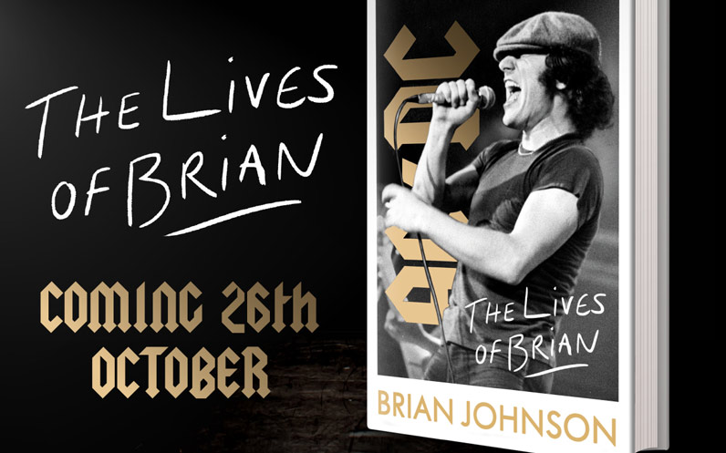

home > news > Fecha Posteo: 12 de abril de 2021 - Brian Johnson Publicará La Autobiografía "The Lives Of Brian" El 26 De Octubre
Brian Johnson Publicará La Autobiografía "The Lives Of Brian" El 26 De Octubre
12 Abril 2021
Brian Johnson, el legendario líder de AC / DC, publicará su tan esperada autobiografía, The Lives of Brian, el 26 de octubre de 2021.
El libro será publicado en el Reino Unido por Penguin Michael Joseph, una división de Penguin Random House, por el director editorial, Rowland White. Harper Collins lo publicará simultáneamente en Estados Unidos.
The Lives of Brian encontrará a Johnson cubriendo sus primeros años de vida y carrera: relatando su infancia en un pequeño pueblo de Inglaterra, comenzando su primera banda y finalmente reemplazando al difunto primer líder de AC / DC, Bon Scott, y haciendo el clásico de la banda de 1980. , De nuevo en la oscuridad.
“He tenido algunas noches largas y noches geniales, algunos días malos y muchos días buenos, y durante ese tiempo pasé de niño de coro a cantante de rock & roll, y ahora escribí un maldito libro ", dijo Johnson sobre el libro en un comunicado.
Johnson se unió a AC / DC en 1980 después de la muerte del cantante original Bon Scott.
Su primer álbum con la banda, Back in Black, se convirtió en el álbum de rock más vendido de todos los tiempos.
Después de un cuarto de siglo de álbumes de platino y giras récord, se vio obligado a dejar la banda en 2016 después de ser diagnosticado con pérdida auditiva, pero hizo un regreso triunfal en 2020 con el lanzamiento de Power Up, que alcanzó el número 1 en veintiún países. Johnson, un exitoso piloto competitivo de autos de carreras de época, recientemente ha disfrutado de la aclamación como el carismático presentador de los programas de televisión Cars That Rock con Brian Johnson y Brian Johnson: A Life of the Road.
Brian dice: "No fui yo. Yo no lo hice. Y nunca lo volveré a hacer ".
Rowland White dice: `` Desde que creció en el noreste, hijo de un ex sargento mayor del ejército británico y una madre italiana, hasta liderar la banda de rock más grande del mundo, The Lives of Brian cuenta una de las mejores historias de la música de Brian. propia voz inimitable. Su vida ha sido una montaña rusa de altibajos durante los cuales el éxito como músico a menudo se sentía fuera de su alcance. Pero incluso cuando parecía que la derrota le había sido arrebatada de las fauces de la victoria, nunca se rindió. Y sus pies permanecieron firmemente plantados en la tierra. Cálida, vívida, evocadora, que afirma la vida y, a menudo, divertida y a carcajadas, The Lives of Brian es una memoria de rock 'n' roll estándar de oro de uno de nuestros artistas más queridos. Brian es único en su clase y no podría estar más orgulloso de publicar su libro ".
The Lives of Brian de Brian Johnson será publicado en tapa dura por Penguin Michael Joseph en el Reino Unido (a un precio de £ 20) y Dey Street Books / HarperCollins en los Estados Unidos (a un precio de $ 28,99) el 26 de octubre de 2021.
Fuente: Comunicados de prensa de Penguin Random House y HarperCollins. (Actualizado el 13/4/2021)

Archivo
09 julio 2021: Lanzamiento Del Sitio Web Oficial De Bon Scott
03 mayo de 2021: Brian Johnson Actúa Con Foo Fighters En El Evento VaxLive
12 de abril de 2021: Brian Johnson Publicará La Autobiografía "The Lives Of Brian" El 26 De Octubre
07 de abril de 2021: Disco De Imágenes De AC / DC Para El Día De La Tienda De Discos 12 De Junio
07 de abril de 2021: Entrevista Recién Descubierta Con Bon Scott De 1976
09 de enero de 2021: Se Han Encontrado Pistas De Lost Fraternity Con Bon Scott
23 de noviembre de 2020: "Power Up" En El N. ° 1 En 20 Países
07 de octubre 2020: Nuevo Álbum De AC / DC "PWR / UP" A La Venta El 13 De Noviembre
05 de octubre 2020: Nuevo Single "Shot In The Dark" A La Venta El Miércoles
30 de septiembre de 2020: AC / DC Confirma Nueva Alineación
10 de diciembre de 2019: Certificado "Back In Black" 25 Veces Platino En EE. UU.
--sin noticias--
28 de noviembre de 2017: Malcolm Young Se Despidió En Sydney St Mary’s Cathedral